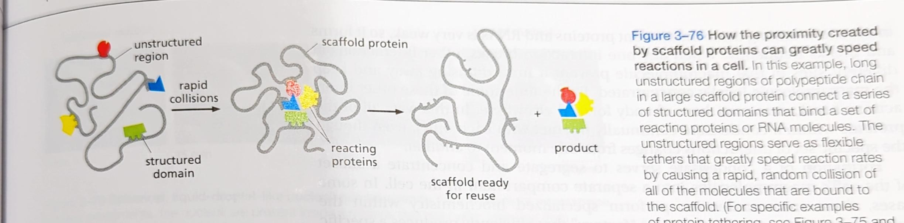

Lesson 4: Protein Regulation
The Cell Regulates the Catalytic…
Active Protein Regulation
Active regulation is when regulatory molecules stimulate enzyme activity rather than shutting them down.
Cells can actively control regulate proteins by:
regulating the expression of the gene that encodes that enzyme
confining sets of enzymes to particular sub-cellular compartments enclosed by distinct membranes
covalently modifying enzymes
Phosphorylation (MOST COMMON)
acetylation
Methylation
Ubiquitination
sumoylation
palmitoylation
etc.
destroying proteins by targeted proteolysis
reversible change in the activity of an enzyme in response to specific small molecules it encounters
Negative Protein Regulation
Feedback Inhibition: a product produced late in a reaction pathway inhibits an enzyme that acts earlier in the pathway.
Negative regulation is when an enzyme is prevented from activating.
Allosteric enzymes have two or more…
Allosteric regulation is regulation that occurs when a molecule binds to the regulatory site of a enzyme causing its confirmation to change blocking or enhancing the active site.
Regulatory site: binding site for a regulatory molecule
Active site: binding site for substrates


Many changes in proteins are driven…
Phosphorylation is a covalent modification of a enzyme where a phosphate group is added to the protein. The ways that phosphorylation can affect activity of a protein are:
by attracting a cluster of positively amino acid side chains causing a major confirmation change.
forming part of a structure that the binding sites of other proteins (adaptor proteins) recognize.
masking binding sites for protein-protein interactions
One third of all proteins in mammalian cells are thought to be phosphorylated at a given time. A protein can be phosphorylated in multiple places but a polyphosphate chain cannot be formed.

A Eukaryotic Cell Contains a large…
Protein phosphorylation involves the enzyme-catalyzed transfer of the terminal phosphate of an ATP molecule to the hydroxyl group on a serine, theonine, or tyrosine side chain of the protein. Phosphorylation is considered an unidirectional reaction because of the large amount of free energy released when the phosphate-phosphate bond is broken to convert ATP to ADP. Protein kinases catalyse the phosphorylation reaction. A protein phosphatase catalyzes the reverse reaction.
Proteins that bind and hydrolyze GTP…

Regulatory Proteins Control…
The Activation of Protein Machines…

